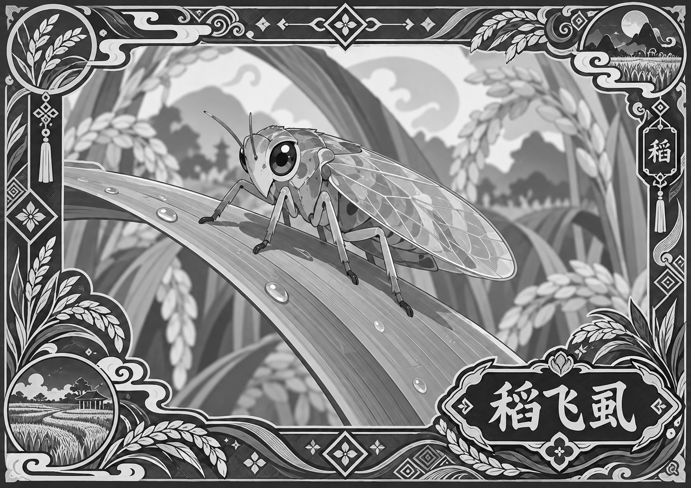

拖动旋转 · 滚轮缩放 · 点亮点上课
稻田沙盘
把手机对准桌面，点一下放下一座稻田。
拖动转一转，点亮点，听老乡讲稻飞虱。
📱
陀螺仪模式
对准桌面点放置
拖动转视角
🃏
图卡模式
扫图卡
沙盘贴卡上
打开摄像头
对准图卡…
沙盘会出现在卡片上
没有卡片？点我看

把这张卡打印出来，或在另一台设备上打开它，用本机摄像头对准
返回
对准桌面，点一下放下稻田
拖动旋转 · 双指缩放 · 点亮点上课
回正
稻飞虱
水稻病虫害课 · AR 沙盘版
第
1
天
0:00 / 0:58
跳过
×
完整课程即将上线